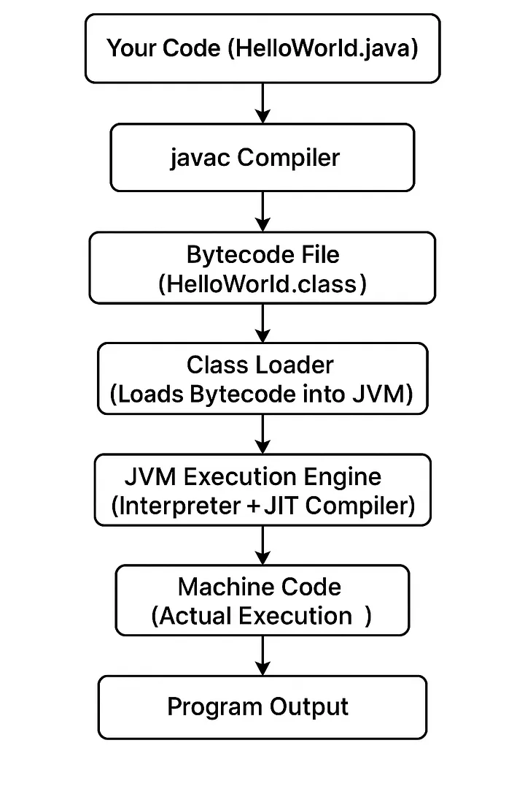
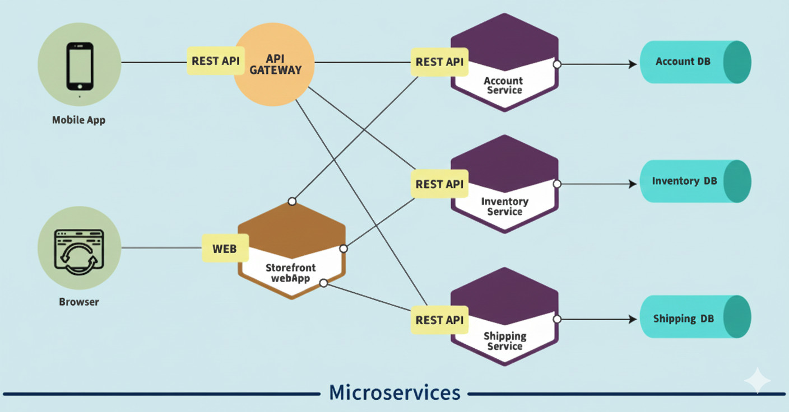

Charla de Java:
Para desarrolladores de Front
Rafael Avaria
2026
Contenidos
Javascript y angular
Javascript es el lenguaje
Angular es un framework y dicta el tono de como vamos a usar js
js
Proxy object
Reflect
Generadores
Simbolos
Map y set
WeakMap y WeakSet
Iteradores
Angular
Rxjs y zone js
Uso de anotaciones
Formularios Reactivos (tipados)
Signals
Componentes (standalone)
api propia de animaciones
Modulos, Servicios, Directivas
El ecosistema de Java

Java Platform, Standard Edition (Java SE)
Java Platform, Enterprise Edition (Java EE)
Java Platform, Micro Edition (Java ME)
JavaFX
Referencia de la imagen: Alexander Souza blog
La Maquina virtual de Java

Compilación: genera bytecodes (javac)
Carga de clases: carga las clases en la JVM (jvm)
Ejecución: el motor de ejecución de Java (JVM) interpreta y ejecuta el bytecode (jvm)
Referencia de la imagen: Medium: Ramesh Fadatare
Lenguages que pueden correr en la Maquina virtual de Java
Java, Kotlin, Scala, Groovy, Clojure, JRuby, Jython, Ceylon, Fantom, etc.
Referencia de la imagen: Grupo Freaky engineers
Como se bajan dependencias en Java
Javascript
npm
yarn (React)
pnpm ( mono repositorios )
Configurar .npmrc para bajar dependencias de bci
Java
maven
Configurar .m2 para que baje artefactos de BCI
gradle
Configurar gradle demon con gradle files para poder acceder a artefactos de bci
Configurar repositorios en pom.xml con maven
Configurar dependencias en build.gradle con
Java y springboot
Java es el lenguaje
springboot es un framework y dicta el tono de como vamos a usar java
Java
Colecciones
Lambdas y interfaces funcionales
Streams API
Optional
CompletableFuture / concurrency mejorada
JPMS / Módulos (Module System)
Text Blocks
Records, Pattern Matching y Sealed Classes
Spring boot
Starters
Embedded servers (Tomcat, Jetty, Undertow)
Opinionated defaults
Spring Boot Actuator, metricas
Externalized configuration
Spring Data y soporte de persistencia
Integración con el ecosistema Spring — seguridad, mensajería, cloudm testing y extensibilidad.
Una función en Java
public class MathUtil {
// Java es tipado y le gusta saber si una función puede lanzar una excepción (no es mandatorio)
public static int add(int a, int b) throws IllegalArgumentException {
if (a < 0 || b < 0) {
throw new IllegalArgumentException("Los argumentos deben ser positivos");
}
return a + b;
}
// java tiene mas 100 tipos distintos de excepciones
public static double divide(double a, double b) throws ArithmeticException {
if (b == 0) throw new ArithmeticException("No se puede dividir por cero");
return a / b;
}
}
Exceciones una para cada caso
La excepción mas famosa "NullPointerException" (del millon de dolares)

Referencia de la imagen: Somos Hackers de la Programación
Colecciones en Java, desde Java 1.2

package com.arquitecturajava;
import java.util.Map;
import java.util.List;
public class Principal2 {
public static void main(String[] args) {
Iterable lista = List.of("hola", "que", "tal", "estas");
lista.forEach(System.out::println);
Map mapa = Map.of(1, "ordenador", 2, "Tablet");
mapa.forEach((clave, valor) -> System.out.println(clave + ":" + valor));
}
}
Referencia de la imagen: Arquitectura Java blog
Java Streams y Lambdas, java (2014)
public class Example {
public static int sum() {
List nums = Arrays.asList(1,2,3,4,5);
int sum = nums.stream()
.filter(n -> n % 2 == 1)
.mapToInt(Integer::intValue)
.sum();
return sum;
}
}
Text record, desde Java 15 (2020)
String text = """
This is a text block.
It spans multiple lines without explicit \n characters.
Leading indentation is stripped automatically.
""";
System.out.println(text);
String json = """
{
"name": "Alice",
"path": "C:\\\\Users\\\\Alice" // escape backslash as usual
}
""";
System.out.println(json);
String tpl = """
Hello, %s!
Today is %s.
""".formatted("Bob", java.time.LocalDate.now());
System.out.println(tpl);
Record, desde Java 17 (2021)
// Record es inmutable, no se pueden cambiar sus valores después de la creación
public record Persona(String nombre, int edad) { }
// como se usa
public class Main {
public static void main(String[] args) {
Persona p = new Persona("Alicia", 30);
System.out.println(p.nombre() + " is " + p.edad());
}
}
Pattern matching, desde Java 17 (2021)
public class PatternInstanceOf {
static void describe(Object o) {
if (o instanceof Persona persona) {
System.out.println("Persona: " + persona.nombre() + ", " + persona.edad());
} else {
System.out.println("Not a person: " + o);
}
}
public static void main(String[] args) {
describe(new Persona("Bob", 25));
describe("a string");
}
}
Sealed classes, desde Java 17 (2021)
// interface sellada, solo puede ser implementada por las clases listadas en "permits"
public sealed interface Forma permits Circulo, Rectangulo, Triangulo {}
public final class Circulo implements Forma {
public final double radio;
public Circulo(double r) { this.radio = r; }
}
public final class Rectangulo implements Forma {
public final double w, h;
public Rectangulo(double w, double h) { this.w = w; this.h = h; }
}
public final class Triangulo implements Forma {
public final double a, b, c;
public Triangulo(double a, double b, double c) { this.a = a; this.b = b; this.c = c; }
}
// Pattern matching con switch (
public class FormaArea {
static double area(Forma s) {
return switch (s) {
case Circulo c -> Math.PI * c.radio * c.radio;
case Rectangulo r -> r.w * r.h;
case Triangulo t -> {
double s1 = (t.a + t.b + t.c) / 2.0;
yield Math.sqrt(s1 * (s1 - t.a) * (s1 - t.b) * (s1 - t.c)); // Heron
}
Que hace díficil el desarrollo en Java (Bci)

- El ecosistema de Java es muy grande y diverso.
- Gestión de memoria: Aunque Java tiene un recolector de basura, hay fugas de memoria.
- Consume del heap: out of memory
- Streams, Listeter y sockets mal cerrados
- Mal uso de la concurrencia
- Recurción mal manejada
- Uno necesita mucho más código para hacer lo mismo en Java
- Bci librerías propias y requiere que uno este familiarizado con ellas.
- Arquitectura de microservicios: produce muchos fallos si no es cuidadoso
Más información
- Documentación Oficial Oracle docs.
- Más ejemplos y demos:
- Presentación Impressionist: a 3D GUI to create impress.js presentations